Volunteer Report Cité-Unis
Abstract
This report analyzes surveys for four different cohorts of Cité-Unis volunteers who did their service civique (2020-2024).
Introduction
In this report, we address three main questions regarding volunteers who do there service civique in France:
- Who are the volunteers? (Section 2)
- How does the service civique change the volunteers’ attitudes and views? (Section 3)
- Are there trends between different cohorts of volunteers? (Section 4)
- What predicts whether volunteers…
- …end their contract early? (Section 5.1)
- …are more satisfied ? (Section 5.2)
- …are more confident about their future? (Section 5.3)
- How do volunteers differ between the different programs?
- Ciné (Section 6.1)
- Ecology (Section 6.2)
We rely on questionnaires collected by Cité-Unis for four different cohorts of volunteers who did their service civique for a year (2020-2021; 2021-2022; 2022-2023; 2023-2024). These questionnaires are very extensive. For the present analyses, we selected a subset of key questions (a full list can be found in the codebook). Note that this selection of variables was based only on the questionnaire of the first cohort (2020/21). As a result, potentially interesting variables that only appear in later questionnaires will not appear here.
Who are the volunteers ?
Here, we just review some demographic variables briefly. An extensive summary table with sample demographics across the different cohorts can be found in Tables.
Geographic location
Volunteers came from 80 different departments (see Figure 1). On average, across the different cohorts, most volunteers came from Bouches-du-Rhône (n = 404), followed by Nord (n = 350) and Seine-Saint-Denis (n = 316).
Overall, there has been a steady increase in volunteers, from 6386 in 20-21 to 7848 in 23-24, and an average increase of 490.4 per year. Since the 20-21 cohort, each departement has on average increased by 26.7. There were 51 departements who saw an increase, and 14 who saw a decrease (see Figure 2). For details on the trend of each departement, see Tables.

Age
Across all promos, the majority of volunteers is between 18 and 20 years old (Figure 3).


Education
As shown in Figure 4, volunteers with a “Bac + 3 et plus” are relatively rare. The share of volunteers with a “Bac à Bac + 2” has been constantly decreasing, from 48% in 2020/21 to 40% in 2023/24. By contrast, volunteers “Infra-bac”, have been increasing from 32% in 2020/21 to 43% in 2023/24.
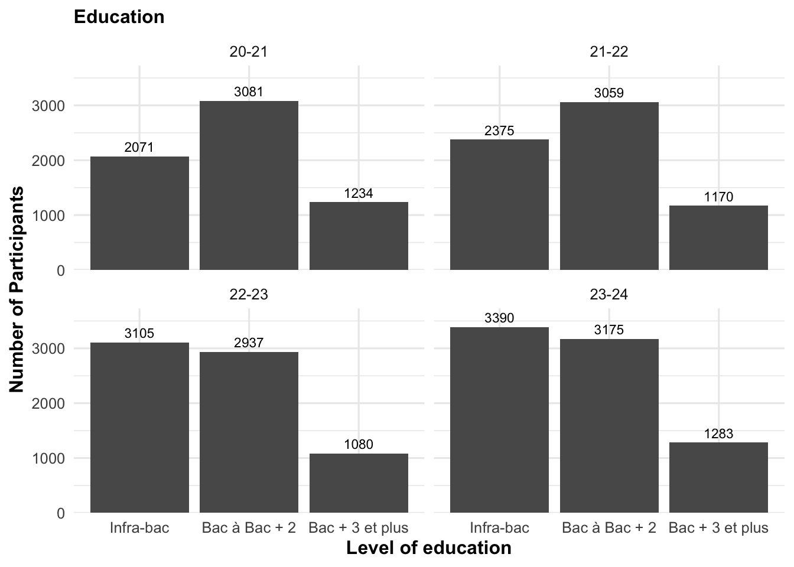

Sex
There is a relatively stable difference regarding sex, with more women (~60%) being volunteers than men (Figure 5).

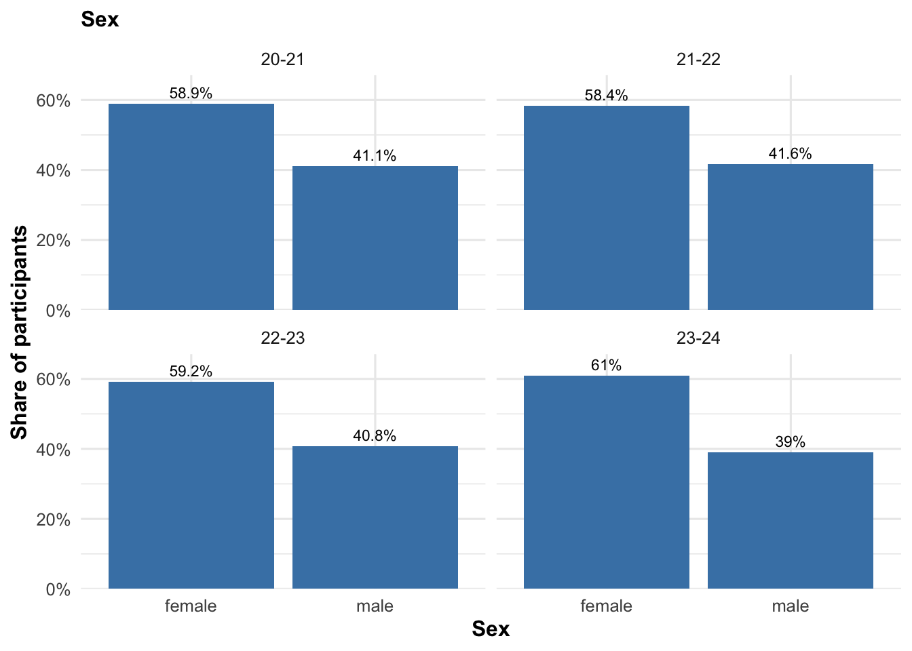
How have volunteers changed their attitudes?
First, this analysis is restricted by attrition, i.e. volunteers dropping out of the surveys over time (see Figure 6). Second, there are only two questions that volunteers of the same promo have been asked at different time points: [REPORT them here].

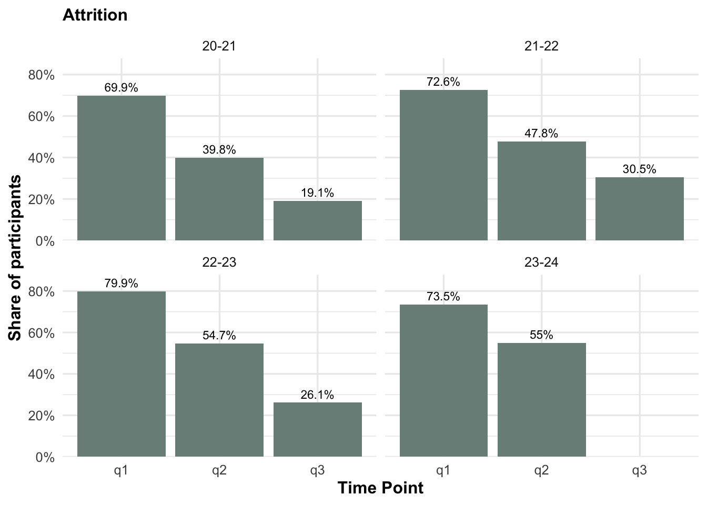
Voting
The figures in this section shows all volunteers who answered the question [XX] at both time points (q1 and q2), with either “yes” or “no”, for the different promos (promo 2020-21, Figure 7; promo 2021-22, Figure 8; 2022-23, Figure 9; 2023-24, Figure 10).
This descriptive analysis suggests that the service civique did not have an impact on voting behavior, on average. However, this analysis is pooled across different cohorts, not all of which would have had the chance to change their voting behavior during their year volunteering, simply because there were no elections.
Promo 2020-21


Promo 2021-22
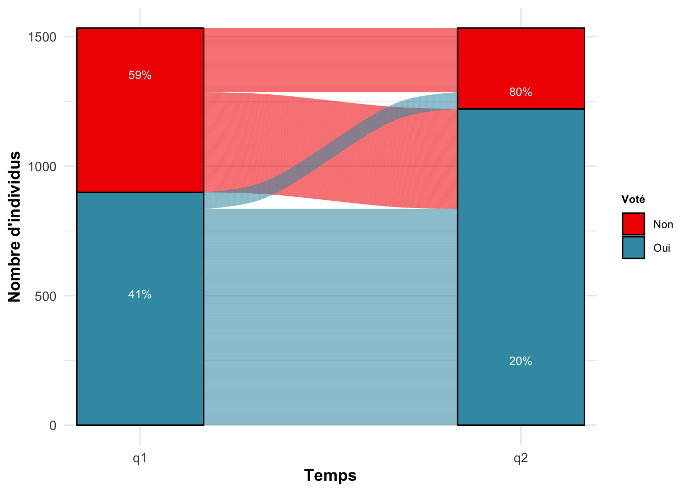
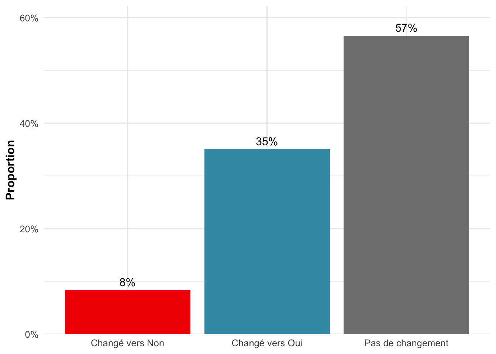
Promo 2022-23

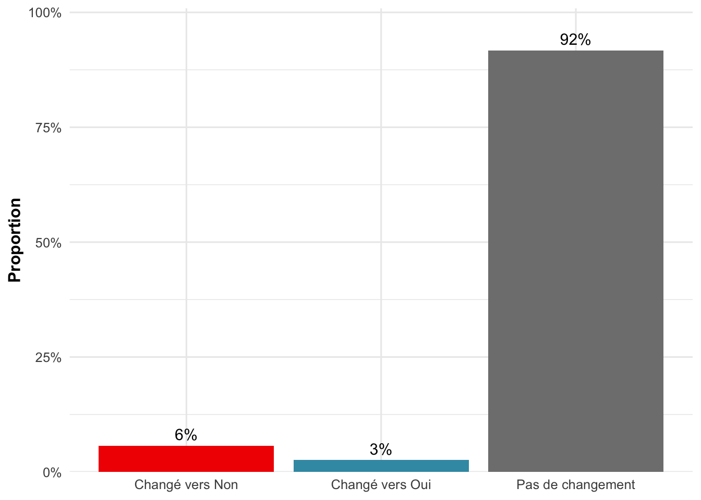
Promo 2023-24
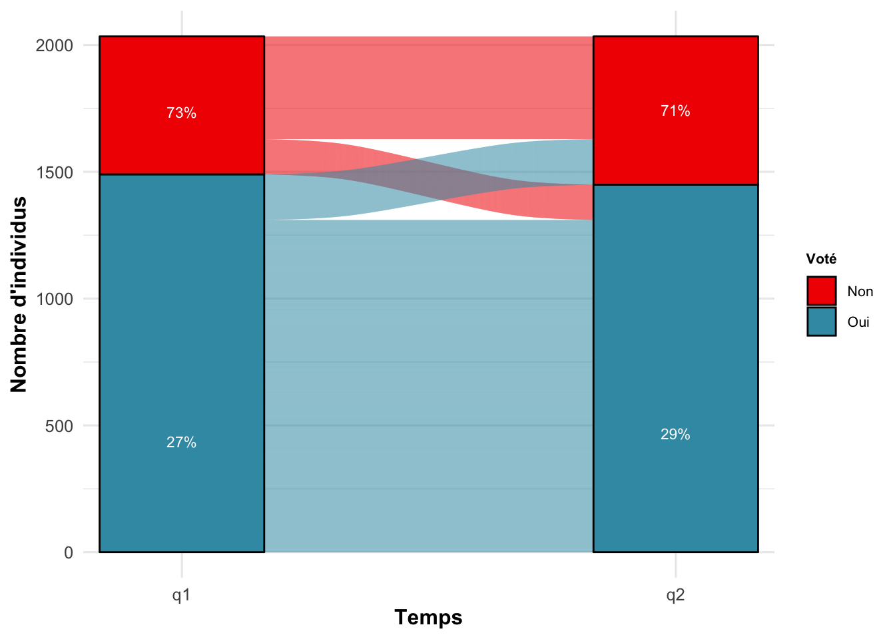
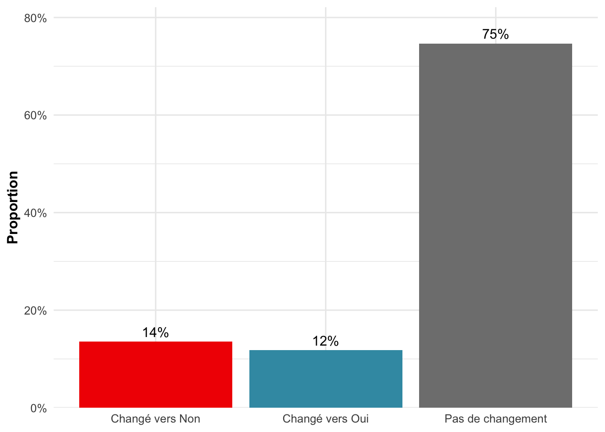
Acting for society
The figures in this section show changes in volunteers perception on whether their individual action can contribute to changing society, for the different promos (promo 2020-21, Figure 11; promo 2021-22, Figure 8; 2022-23, Figure 9; 2023-24, Figure 10)1. Descriptively, there is no clear positive or negative trend either.
Promo 2020-21


Promo 2021-22

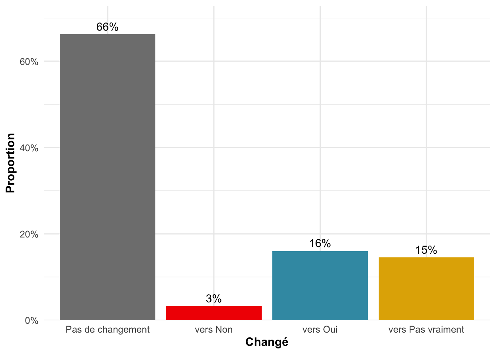
Promo 2022-23

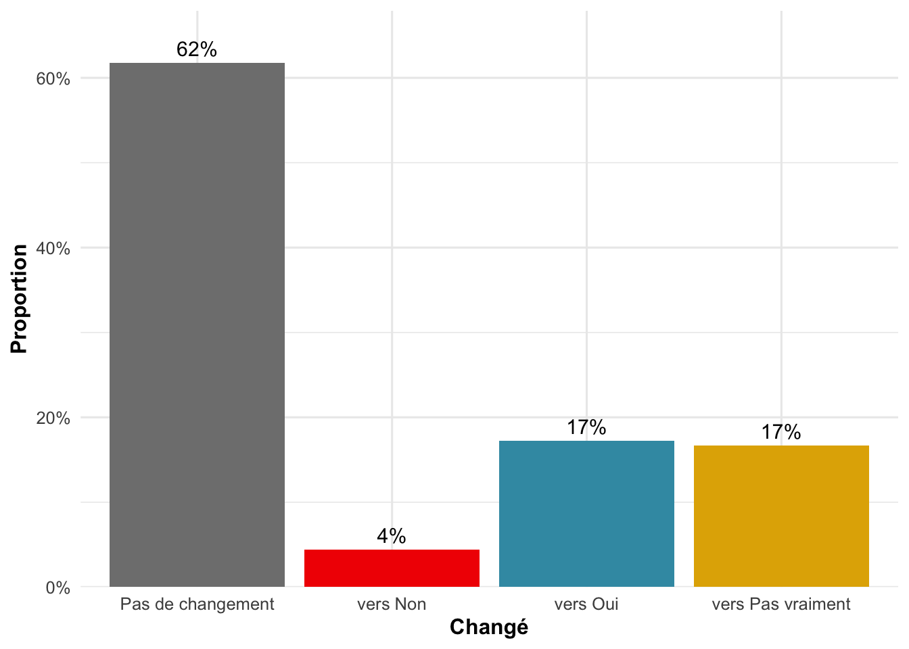
Are there trends between different cohorts of volunteers?
There are many possible differences to investigate between cohorts. Here, we report XX [add two other variables].
Satisfaction
Figure 14 shows how different cohorts evaluated their satisfaction with the service civique.
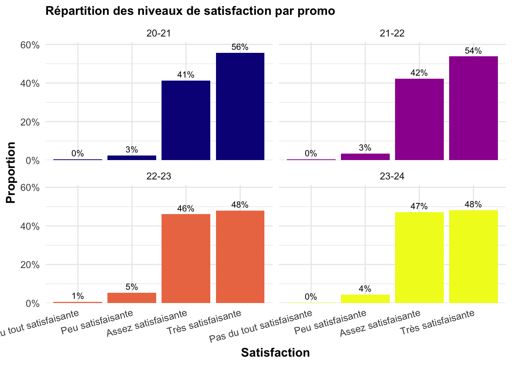
Predictions
Note that all predictions here are just statistical associations–they tell us about differences we observe, but they do not provide proof for causal conclusions on why we observe these differences.
What predicts whether volunteers end their contract early (rupture)?
Figure 15 shows how many volunteers have ended their contract early (rupture), for the different promos. Figure 16 provides an overview of the different reasons, pooling all promos.
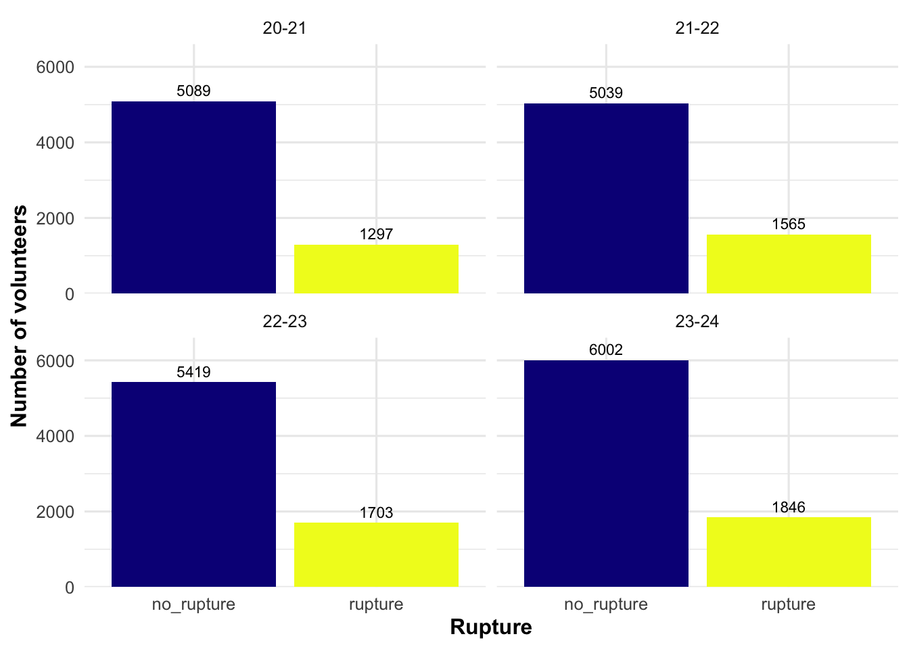


Not all volunteers work until the end of their contract. In fact, 22.9% of volunteers have a “rupture”, i.e. terminate the contract early. There are various motives for ending one’s contract early (see Table 1). Not all of them are necessarily bad, e.g. “Embauche en CDD d’au moins 6 mois ou CDI”, and some are outside of the influence of the volunteers, e.g. “Fin de validité du Titre de Séjour”. For our analyses, we focus only on volunteers who ended their contract early for apparently negative reasons.
To see whether there are differences in different groups, we ran separate logistic regressions for a selection of variables. The results are shown in Figure 17. Because the magnitude of the odds ratios (OR) are not straightforward to interpret, Figure 18 shows descriptive differences in contract terminations for some groups.
| motif_rupture | rupture_valence | n |
|---|---|---|
| 01 - Abandon de poste | negative | 1444 |
| 02 - Faute grave d'une des parties | negative | 455 |
| 03 - Force majeure | negative | 280 |
| 04 - Embauche en CDD d'au moins 6 mois ou CDI | positive | 621 |
| 05 - Embauche en CDD moins de 6 mois | positive | 383 |
| 06 - Commun accord entre les parties | negative | 2761 |
| 07 - Le volontaire n'a jamais pris son poste | negative | 13 |
| 08 - Retrait de l'agrément de la structure d'accueil | negative | 3 |
| 09 - Reprise d'études | positive | 412 |
| 10 - Fin de validité du Titre de Séjour | raisons externes | 39 |
| NA | NA | 21549 |
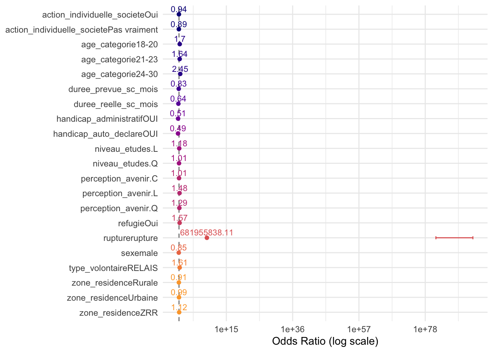
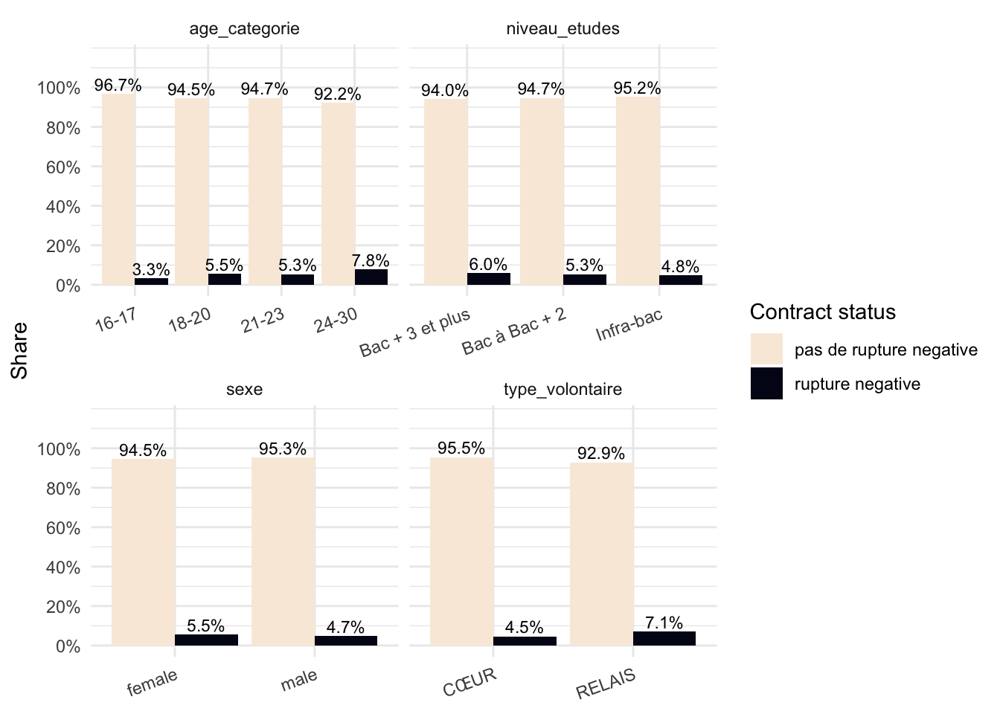
How to make sense of the odds ratios? Take the example of the type of volunteers (type_volontaire). Table 2 shows the count, odds and share for rupture vs. no rupture for a negative motive.
| type_volontaire | pas de rupture negative | rupture negative | odds | share |
|---|---|---|---|---|
| CŒUR | 19863 | 945 | 21.019 | 0.045 |
| RELAIS | 6642 | 510 | 13.024 | 0.071 |
In this case the OR is odds of “CŒUR” divided by odds of “RELAIS” (OR = 1.6138667).
For non-demographic variables, investigating their relationship with rupture is not possible–simply because, by definition, for questions that have been only asked at “q2” and “q3”, volunteers who had ended their contract early were not available anymore (see Table 3). Only for the two variables that have been asked at “q1” (perception_avenir and action_individuelle_societe) we can look at their relationship with rupture (Figure 17).
| variable | source |
|---|---|
| perception_avenir | q1 |
| action_individuelle_societe | q1 |
| projet_avenir_concret | q2 |
| comparaison_utilite_autres | q2 |
| fierte | q2 |
| confiance_en_soi | q2 |
| confiance_avenir_personnel | q2 |
| action_individuelle_societe | q3 |
| impact_situation_actuelle | q3 |
| integration | q2 |
What predicts whether volunteers are more satisfied ?
In this section, we look at satisfaction (“D’une manière générale, diriez-vous que votre Service Civique s’est déroulé de façon…” with levels 1, “pas du tout satisfaisainte”, to 4, “très satisfaisante”)2. As shown in Figure 19, taking all cohorts together, the majority of volunteers thinks their experience is “très satisfaisant”.
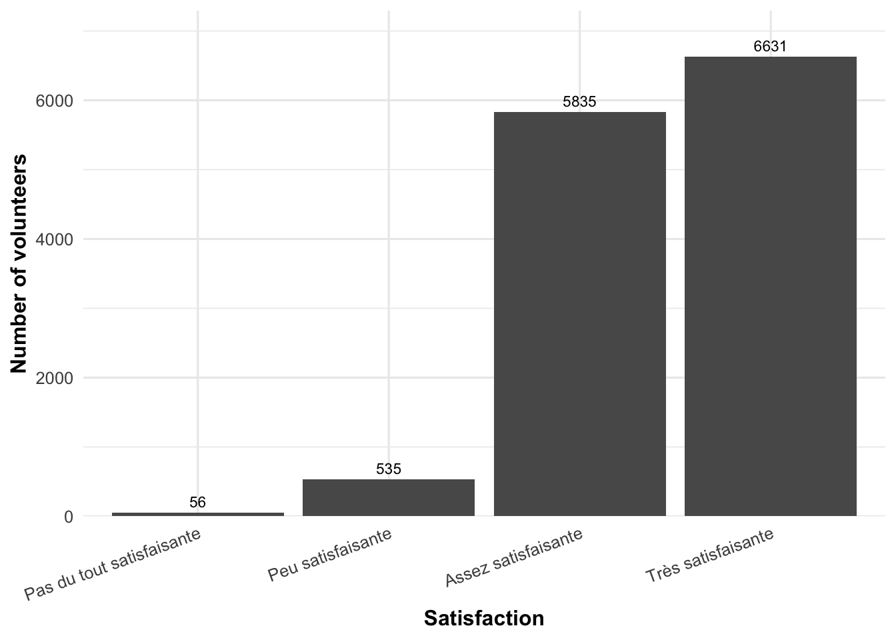
To see whether there are statistical differences between different categories of volunteers, we ran separate regression models for a selection of variables. The results are shown in Figure 20, for demographic variables, and Figure 21, for other variables. The estimates in these figures are the results of separate linear regressions for each variable. All likert scale type responses (such as satisfaction) have been coded as numeric (from 1 to 4). How to interpret the coefficients? For categorical variables, a baseline has been chosen in the model (refer to the codebook to see the omitted baseline category). The estimate shown in the graph is how much, compared to this baseline, satisfaction increases or decreases (on a scale from 1 to 4). For numeric variables, estimates represent how much satisfaction increases or decreases after increasing the variable by one unit.
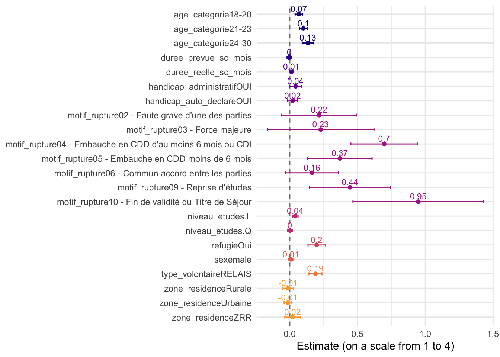

What predicts whether volunteers are more confident in their future ?
In this section, we look at confidence in one’s future (“Concernant votre avenir, êtes-vous…?” with levels 1, “Pas du tout confiant.e”, to 4, “Très confiant.e”)3. As shown in Figure 22, taking all cohorts together, the majority of volunteers are “assez confiant.e”.
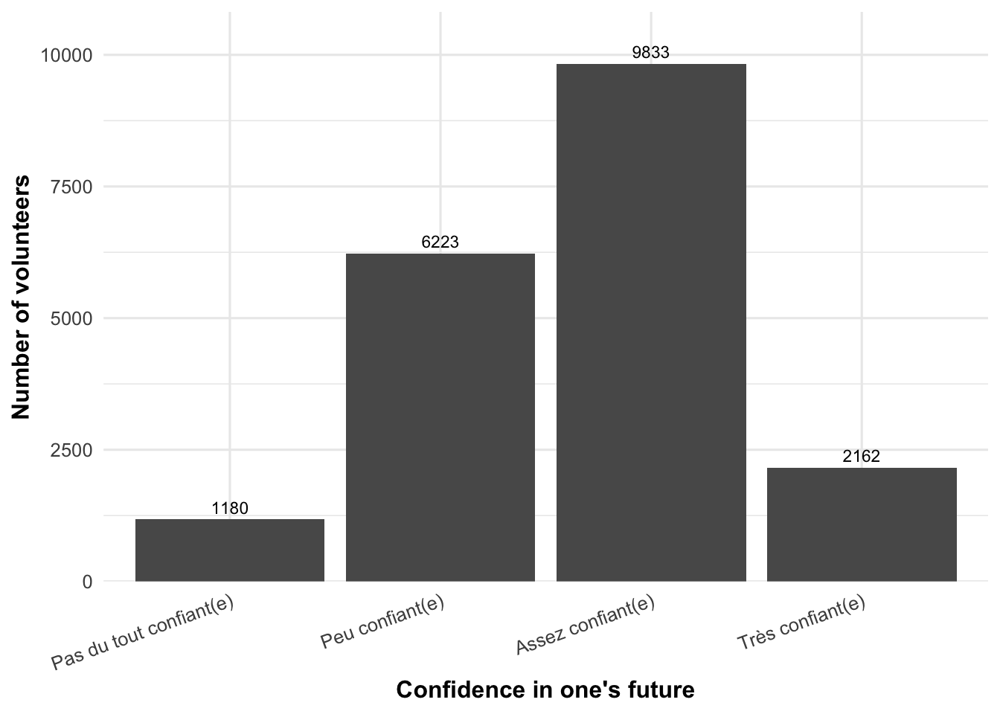
To see whether there are statistical differences between different categories of volunteers, we ran separate regression models for a selection of variables. The results are shown in Figure 20, for demographic variables, and Figure 21, for other variables. The estimates in these figures are the results of separate linear regressions for each variable. All likert scale type responses (such as satisfaction) have been coded as numeric (from 1 to 4). How to interpret the coefficients? For categorical variables, a baseline has been chosen in the model (refer to the codebook to see the omitted baseline category). The estimate shown in the graph is how much, compared to this baseline, satisfaction increases or decreases (on a scale from 1 to 4). For numeric variables, estimates represent how much satisfaction increases or decreases after increasing the variable by one unit.
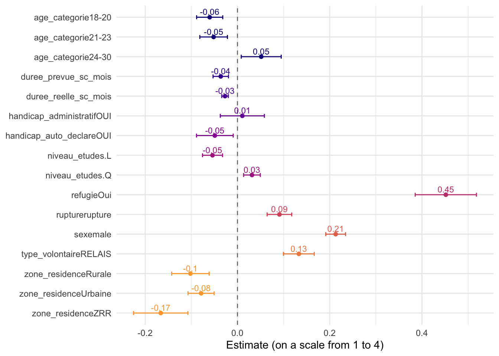
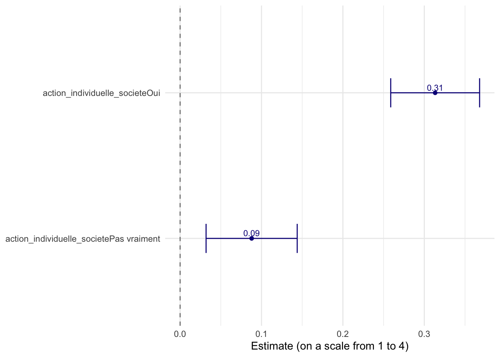
Differences between programs
Ciné
Volunteers who work in cine-related projects tend to be older and more educated. Refugies are less likely to be cine volunteers. If there is a preliminary end to the contract, cine volunteers are more likely to do so because they were offered a CDD of less than 6 months. Refugees are less likely to be cine volunteers, and women, as well as people from urban areas are more likely.
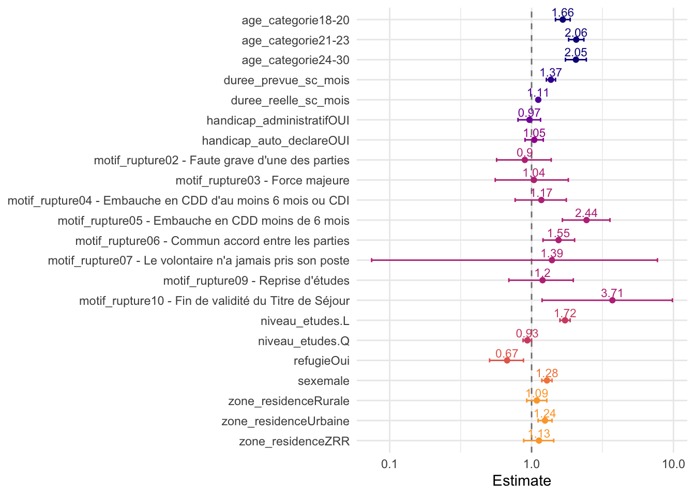
Ecovolonterre
Ecovolonterres tend to be older (mostly in the 21 to 23 agegroup) and more educated than other volunteers. They tend to plan for longer volunteer programs. Ecovolonterres tend to be from more rural but also urban ares (compared to QVP).
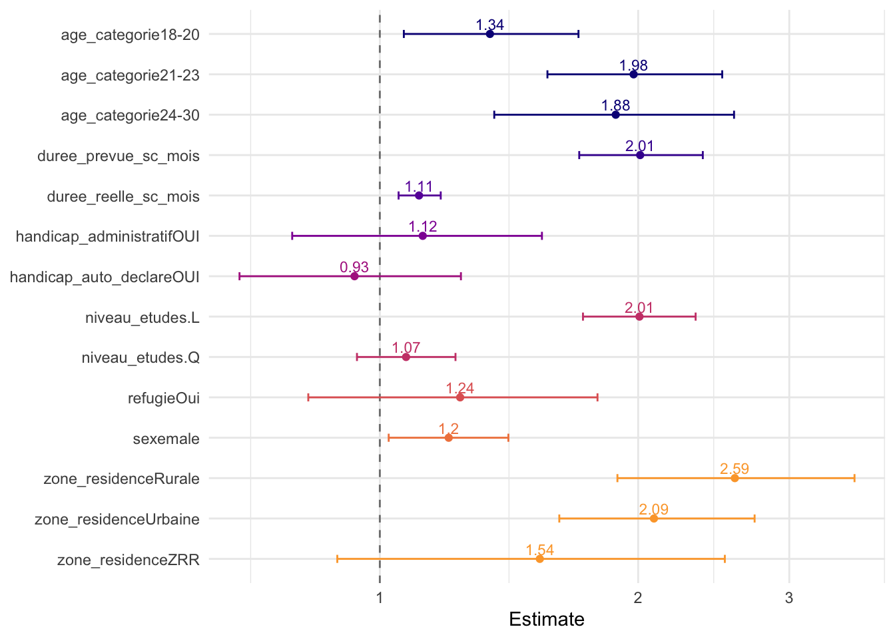